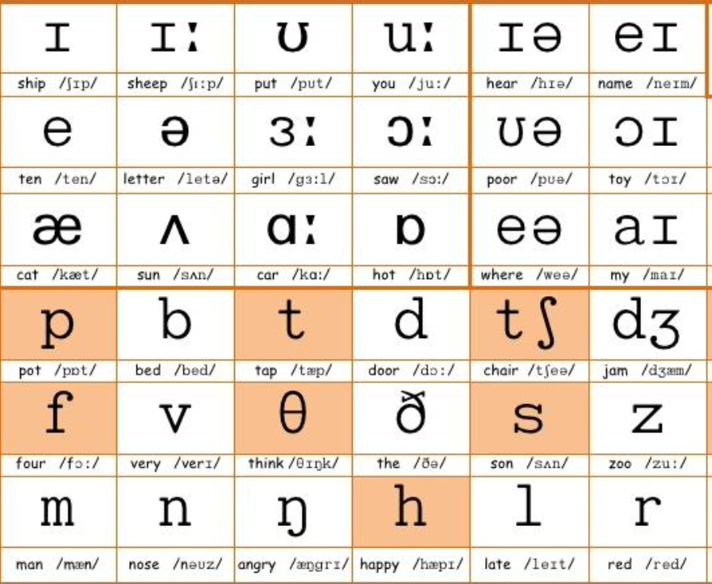

In-depth descriptions of some projects I've worked on! If you want a closer look at my repos check out my GitHub
IPA Rhyme Generator

A rhyme generator using IPA pronunciations and NLP to help song writers find potential rhyming words for their lyrics. Rhyme generators online focus on finding perfect rhymes, but the world of songwriting is much broader than that. Unlike mainstream rhyme generators I've math-ified IPA pronunciations to find perfect, family, additive/subtractive, and assonance rhymes, allowing users to select what type of rhyme best fits their song.
So far I have built a rhyming dictionary for over 30,000 English words.
I've pulled lyrical data of top 50 pop songs from 2015-2021 using the Genius API and have analyzed the rhyme patterns and specific words used in these songs in order to build a recommender model to help song writers get inspiration for their lyrics.
Both r/WritingPrompts and r/TwoSentenceHorror are subreddits made for people to show their literary creativity. Yet the sentiment behind these subreddits are quite different.
I wanted to see if the post we made is scary enough for r/TwoSentenceHorror, or if it belongs in r/WritingPrompts!
I analyzed over 3000 posts from both subreddits in order to generate a machine learning model that classifed a post to either subreddit with a 96.62% accuracy. In order maintain the integrity of the model, I made sure to exculde subreddit specific tags.
Sub-Reddit Classifier
Japan's Train Incidents
"Jishinjiko" translates literally to "human incident" and is the Japanese term for a suicide by train. My team and I created a collaborative data story analyzing trends in these suicides. We scraped the raw data from the Laboneko website, cleaned it, and used LocationIQ's geocoding API to find the geolocation data of every station in Japan.
Using Tableau and JavaScript’s D3 library, we explored the data and created a data story with interactive data visualizations hosted on a github webpage